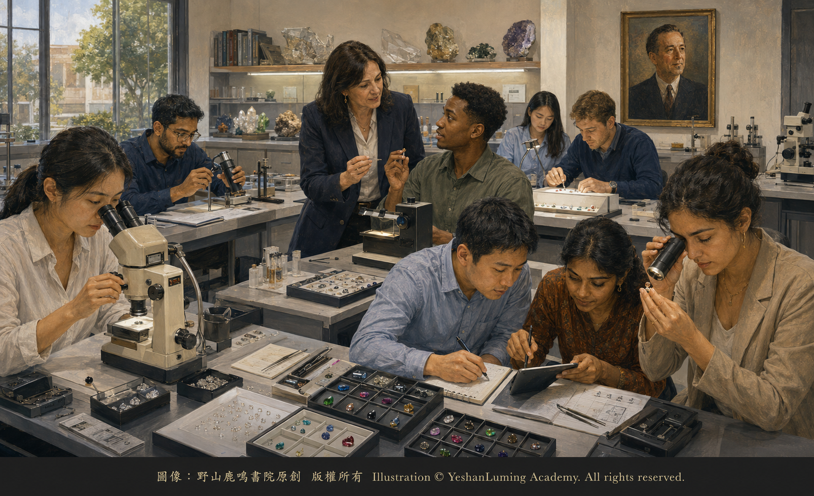

GG是什麼·成為寶石學家的道路What Is a GG? · The Path to Becoming a Gemologist
The World of Gemstones · Diamond SeriesWhat Is a GG? · The Path to Becoming a Gemologist
The World of Gemstones · Diamond SeriesGG是什麼·成為寶石學家的道路
寶石世界·鑽石篇
寶石世界·鑽石篇（121）The World of Gemstones · Diamond Series (121)
在前面的文章中，我們介紹了GIA的誕生，以及創始人羅伯特·M·希普利如何通過寶石學教育，推動美國珠寶行業走向現代化。
如果進一步追問：今天，一個人應該如何系統學習鑽石與彩色寶石知識，掌握基本的分級、觀察和鑑別方法？GIA所設立的Graduate Gemologist課程，是世界珠寶行業中最具影響力的專業學習道路之一。
Graduate Gemologist通常簡稱GG，中文可以譯為「寶石學研究文憑」或「寶石學家文憑」。完成規定課程與考核以後，學生獲得的是GIA Graduate Gemologist Diploma，也就是GG文憑。
這裡需要特別說明：GG不是大學授予的學士、碩士或博士學位，也不是政府頒發的執業許可證。
GIA也不使用「認證寶石學家」這種說法。GG代表的是一個人完成了GIA規定的寶石學課程與實踐訓練，獲得相應專業文憑。
因此，擁有GG文憑，可以說明持有人接受過系統的鑽石與彩色寶石教育，但並不意味著他自動獲得了獨立估價師、實驗室研究員或任何受法律監管職業的執業資格。
真正的專業能力，還需要通過長期實踐、繼續學習、職業訓練與工作經驗不斷建立。
從某種意義上說，4C是一套描述鑽石品質的語言，而GG課程，則訓練學習者理解並運用這套語言，同時進入更為廣闊的彩色寶石與寶石鑑別世界。
GG不是單純的理論課程，而是一套結合知識、觀察、儀器使用和實際判斷的專業訓練體系。
在前面的文章中，我們介紹了GIA的誕生，以及創始人羅伯特·M·希普利如何通過寶石學教育，推動美國珠寶行業走向現代化。
如果進一步追問：今天，一個人應該如何系統學習鑽石與彩色寶石知識，掌握基本的分級、觀察和鑑別方法？GIA所設立的Graduate Gemologist課程，是世界珠寶行業中最具影響力的專業學習道路之一。
Graduate Gemologist通常簡稱GG，中文可以譯為「寶石學研究文憑」或「寶石學家文憑」。完成規定課程與考核以後，學生獲得的是GIA Graduate Gemologist Diploma，也就是GG文憑。
這裡需要特別說明：GG不是大學授予的學士、碩士或博士學位，也不是政府頒發的執業許可證。
GIA也不使用「認證寶石學家」這種說法。GG代表的是一個人完成了GIA規定的寶石學課程與實踐訓練，獲得相應專業文憑。
因此，擁有GG文憑，可以說明持有人接受過系統的鑽石與彩色寶石教育，但並不意味著他自動獲得了獨立估價師、實驗室研究員或任何受法律監管職業的執業資格。
真正的專業能力，還需要通過長期實踐、繼續學習、職業訓練與工作經驗不斷建立。
從某種意義上說，4C是一套描述鑽石品質的語言，而GG課程，則訓練學習者理解並運用這套語言，同時進入更為廣闊的彩色寶石與寶石鑑別世界。
GG不是單純的理論課程，而是一套結合知識、觀察、儀器使用和實際判斷的專業訓練體系。

Click to enlarge
它的目的，不只是讓學生記住顏色、淨度、折射率與各種寶石名稱，而是訓練學生按照規範程序收集證據，並根據觀察與測試結果作出合理判斷。
GG課程的主要內容，由鑽石與彩色寶石兩大領域構成。按照GIA的課程體系，學習者需要完成Graduate Diamonds，也就是鑽石課程，以及Graduate Colored Stones，也就是彩色寶石課程。彩色寶石部分還包括彩色寶石品質評價與寶石鑑別等重要內容。
在鑽石課程中，學習者需要系統理解4C，也就是克拉重量、顏色、淨度和切工。
學生需要學習如何對D至Z顏色範圍內的鑽石進行顏色分級，如何在標準放大條件下觀察淨度特徵，如何測量或分析鑽石比例，以及如何理解切工、拋光、對稱性和螢光等因素。
顏色分級並不是憑感覺判斷一顆鑽石「白不白」，而是在規定照明、背景與觀察方式下，將待測鑽石與已知顏色等級的標準比色石進行比較。
淨度分級也不是簡單尋找鑽石中有沒有黑點，而是在十倍放大條件下，觀察內含物和表面特徵的大小、數量、位置、性質及明顯程度。同一種內含物，出現在臺面中央或靠近腰圍，對淨度等級與耐久性的意義可能不同。
學生還要學習天然鑽石、實驗室培育鑽石與鑽石仿製品之間的基本區別，瞭解常見處理方法，並認識到哪些情況已經超出常規觀察能力，需要送交設備完善的實驗室作進一步檢測。
這種「知道自己能夠判斷什麼，也知道什麼時候不能貿然下結論」的能力，是專業寶石學訓練中極為重要的一部分。
彩色寶石課程涉及的範圍更加廣泛。紅寶石、藍寶石和祖母綠是彩色寶石課程中的重要內容，但學習範圍並不限於這三類寶石。
寶石世界包含數十種具有商業意義的寶石種類。它們可能具有不同的化學成分、晶體結構、折射率、雙折射、多色性、吸收光譜、比重與內部特徵。
過去珠寶市場經常把鑽石、紅寶石、藍寶石和祖母綠之外的寶石統稱為「半寶石」。這種稱呼容易使人誤以為某些寶石天然比另一些寶石低等，現代寶石學與珠寶行業已經越來越少使用這種簡單分類。
一顆寶石的價值與重要性，需要結合其品種、品質、稀有程度、耐久性、市場需求和具體特徵判斷，而不能只靠「貴寶石」或「半寶石」的舊稱決定。
在彩色寶石學習中，學生需要掌握顏色的基本描述方法，包括色調、明度與飽和度，也要瞭解淨度、切工、克拉重量、稀有性和市場因素如何影響寶石的品質與價值。
但是，與鑽石不同，許多彩色寶石並不存在一套全球統一、完全相同的4C等級體系。彩色寶石的評價往往更加複雜，也更依賴品種特點、顏色表現、透明度、處理情況與市場偏好。
寶石鑑別則要求學習者從外觀觀察開始，按照一定順序使用寶石學儀器收集證據。這些儀器可能包括雙筒寶石顯微鏡、折射儀、偏光鏡、二色鏡和分光鏡等。
顯微鏡可以幫助觀察寶石內部的晶體、癒合裂隙、生長結構、氣液包體與處理痕跡；折射儀可以測量寶石的折射率；偏光鏡可以幫助判斷寶石的光性；二色鏡可以觀察某些寶石的多色性；分光鏡則可以觀察寶石對不同波長光線的選擇性吸收。
但是，儀器不會自動給出答案。
同一種測試結果，可能出現在多種寶石中；某些天然寶石、實驗室培育寶石和經過處理的寶石，也可能具有相近的基本性質。
因此，寶石鑑別不是看到一個現象就立刻猜出名稱，而是把多項觀察與測試結果結合起來，逐步縮小可能範圍，最後形成有證據支持的判斷。
隨著實驗室培育技術和寶石處理技術不斷發展，僅靠傳統儀器，並不能解決所有鑑別問題。
某些寶石的天然或實驗室培育屬性、處理方式以及地理來源，需要使用紅外光譜、拉曼光譜、紫外—可見光譜、化學成分分析和其他先進設備，才能作出可靠結論。
GG訓練的重要內容之一，就是讓學生認識常規寶石學方法的能力與界限，並知道何時需要尋求專業實驗室幫助。
從地質學角度看，學習寶石學，也是學習如何閱讀礦物形成後留下的痕跡。每一顆天然寶石，都產生於特定的地質環境。溫度、壓力、流體、圍岩和化學元素來源，會影響晶體的生長與內部特徵。
某些內含物和生長結構，就像保存在寶石內部的歷史記錄，為研究者理解它的形成過程提供線索。
但是，僅憑一個內含物或一種外觀特徵，通常不能輕率斷定寶石的具體產地。可靠的地理來源判斷，需要把顯微特徵、光譜資料、微量元素化學成分和大型參考資料庫結合起來。這通常屬於專業實驗室的高級分析工作，而不是每一位GG畢業生僅憑基礎儀器就能完成的任務。
GG課程通過理論學習、真實寶石觀察、實驗室練習和相應考核，訓練學生建立規範的工作方法。
具體課程安排、樣本數量與考試形式，可能因校園全日制課程、線上課程和實驗室課程而有所不同，因此不能簡單地用某一個固定的寶石數量概括全部GG學習經歷。
但是，無論採用哪種學習形式，實踐觀察與儀器操作都是GG訓練不可缺少的部分。
學生需要通過課程考試、實驗室練習和實際鑑別考核，證明自己能夠按照要求使用知識和設備，才能獲得GG文憑。GG文憑因而不僅代表一個人學習過寶石學，也代表他完成了GIA規定的系統課程與實踐要求。
在國際珠寶行業中，GG具有很高的知名度。
GG畢業生可能進入珠寶零售與批發、鑽石分級、寶石採購、拍賣、典當、古董珠寶、庫存管理、實驗室工作或珠寶教育等領域。
但是，GG文憑本身並不保證畢業生一定能夠進入某個職位，也不代表持有人自動成為獨立珠寶估價師。
寶石學訓練主要解決寶石鑑別與品質評價問題；珠寶估價還需要學習市場調查、估價方法、法律責任、報告寫作和保險用途等專門知識。一個專業人員即使擁有GG文憑，也仍然需要在具體職業領域中繼續接受訓練。
GG同樣意味著責任。
寶石與珠寶往往具有很高的經濟價值，也承載婚姻、紀念、繼承與家庭情感。一個錯誤判斷，可能給顧客和交易雙方帶來嚴重損失。
因此，專業寶石學不僅要求知識與技術，也要求謹慎、誠實和對自身能力邊界的清楚認識。真正負責任的寶石學家，不會為了顯示自己無所不知而輕率下結論。
當證據不足、儀器能力有限，或者樣品需要高級檢測時，承認不能確定，並建議送交專業實驗室，往往比給出一個聽起來肯定卻沒有根據的答案更加專業。
回到本質，GG的意義並不只是一張文憑，也不是在姓名後面增加兩個英文字母。
它代表的是一種觀察自然的方法：不依靠傳說判斷寶石，不依靠價格猜測真偽，也不依靠第一印象代替證據。它要求學習者觀察、測試、比較、記錄，並在證據允許的範圍內作出判斷。
也許可以這樣理解：鑽石與彩色寶石，是大自然和人類技術共同帶到我們面前的物質；GG所代表的，則是人類試圖用知識、儀器與證據理解它們的一條道路。
一張GG文憑不能使人從此無所不知。
它真正能夠給予學習者的，是進入寶石世界的一套基礎、一雙經過訓練的眼睛，以及面對未知時應有的謹慎。
當知識、實踐與誠實結合在一起，一個人才真正開始走上成為寶石學家的道路。
（未完待續）
In the preceding articles, we introduced the birth of GIA and described how its founder, Robert M. Shipley, helped lead the American jewelry industry toward modernization through gemological education.
If we ask a further question—how should a person today systematically study diamonds and colored stones and acquire the fundamental methods of grading, observation, and identification?—GIA’s Graduate Gemologist program is one of the most influential paths of professional study in the international gem and jewelry industry.
Graduate Gemologist is commonly abbreviated as GG. In Chinese, it may be translated as “Diploma in Gemological Studies” or “Gemologist Diploma.” After completing the prescribed coursework and examinations, a student earns the GIA Graduate Gemologist Diploma, commonly known as the GG diploma.
One point requires particular clarification: the GG is not a bachelor’s, master’s, or doctoral degree awarded by a university, nor is it a professional license issued by a government.
GIA also does not use the expression “Certified Gemologist.” The GG designation signifies that a person has completed GIA’s prescribed gemological coursework and practical training and has earned the corresponding professional diploma.
Possession of a GG diploma therefore demonstrates that its holder has received systematic education in diamonds and colored stones, but it does not mean that the person has automatically acquired the professional qualifications of an independent appraiser, laboratory researcher, or practitioner in any legally regulated occupation.
True professional ability must still be developed through long-term practice, continuing education, occupational training, and working experience.
In a sense, the 4Cs are a language for describing diamond quality, while the GG program trains students to understand and use that language and, at the same time, enter the much broader worlds of colored stones and gem identification.
The GG is not merely a theoretical course of study, but a system of professional training that combines knowledge, observation, instrumentation, and practical judgment.
In the preceding articles, we introduced the birth of GIA and described how its founder, Robert M. Shipley, helped lead the American jewelry industry toward modernization through gemological education.
If we ask a further question—how should a person today systematically study diamonds and colored stones and acquire the fundamental methods of grading, observation, and identification?—GIA’s Graduate Gemologist program is one of the most influential paths of professional study in the international gem and jewelry industry.
Graduate Gemologist is commonly abbreviated as GG. In Chinese, it may be translated as “Diploma in Gemological Studies” or “Gemologist Diploma.” After completing the prescribed coursework and examinations, a student earns the GIA Graduate Gemologist Diploma, commonly known as the GG diploma.
One point requires particular clarification: the GG is not a bachelor’s, master’s, or doctoral degree awarded by a university, nor is it a professional license issued by a government.
GIA also does not use the expression “Certified Gemologist.” The GG designation signifies that a person has completed GIA’s prescribed gemological coursework and practical training and has earned the corresponding professional diploma.
Possession of a GG diploma therefore demonstrates that its holder has received systematic education in diamonds and colored stones, but it does not mean that the person has automatically acquired the professional qualifications of an independent appraiser, laboratory researcher, or practitioner in any legally regulated occupation.
True professional ability must still be developed through long-term practice, continuing education, occupational training, and working experience.
In a sense, the 4Cs are a language for describing diamond quality, while the GG program trains students to understand and use that language and, at the same time, enter the much broader worlds of colored stones and gem identification.
The GG is not merely a theoretical course of study, but a system of professional training that combines knowledge, observation, instrumentation, and practical judgment.
Click to enlarge
Its purpose is not simply to have students memorize color grades, clarity grades, refractive indices, and the names of different gems. It trains them to collect evidence through standardized procedures and to reach reasoned conclusions based upon observation and testing.
The principal content of the GG program encompasses two major fields: diamonds and colored stones. Under GIA’s educational structure, students must complete Graduate Diamonds and Graduate Colored Stones. The colored-stone portion also includes such important subjects as colored-stone quality evaluation and gem identification.
In the diamond program, students must develop a systematic understanding of the 4Cs: carat weight, color, clarity, and cut.
They learn how to color grade diamonds in the D-to-Z range, examine clarity characteristics under standard magnification, measure or analyze diamond proportions, and understand factors such as cut, polish, symmetry, and fluorescence.
Color grading is not a matter of judging by instinct whether a diamond looks “white.” It requires comparing the diamond being examined with master stones of known color grades under prescribed lighting, background, and viewing conditions.
Clarity grading is likewise not a simple search for black spots within a diamond. Under ten-power magnification, the grader considers the size, number, position, nature, and relief of inclusions and surface features. The same type of inclusion may have different implications for clarity and durability depending upon whether it lies beneath the center of the table or near the girdle.
Students must also learn the fundamental distinctions among natural diamonds, laboratory-grown diamonds, and diamond simulants; understand common treatments; and recognize when a case has exceeded the capabilities of routine observation and should be submitted to a properly equipped laboratory for further testing.
The ability to know both what one is capable of determining and when one must not rush to a conclusion is an extremely important part of professional gemological training.
The colored-stone program covers an even broader range of material. Ruby, sapphire, and emerald are important subjects, but the field of study is by no means limited to these three groups of gems.
The gem world contains dozens of commercially significant gem species and varieties. They may differ in chemical composition, crystal structure, refractive index, birefringence, pleochroism, absorption spectrum, specific gravity, and internal characteristics.
In the past, the jewelry market often classified all gems other than diamond, ruby, sapphire, and emerald as “semiprecious stones.” This expression can create the false impression that certain gems are inherently inferior to others, and modern gemology and the jewelry industry increasingly avoid this simplistic classification.
The value and importance of a gem must be judged according to its species or variety, quality, rarity, durability, market demand, and individual characteristics. It cannot be determined solely by the old labels “precious” or “semiprecious.”
In the study of colored stones, students learn the fundamental language of color description, including hue, tone, and saturation. They also examine how clarity, cut, carat weight, rarity, and market factors influence the quality and value of a gem.
Unlike diamonds, however, many colored stones are not evaluated through a single, globally uniform system identical to the diamond 4Cs. Colored-stone evaluation is often more complex and depends more heavily upon the particular gem variety, color appearance, transparency, treatment status, and market preference.
Gem identification requires students to begin with visual observation and then collect evidence through the methodical use of gemological instruments. These instruments may include a binocular gemological microscope, refractometer, polariscope, dichroscope, and spectroscope.
A microscope can reveal crystals, healed fractures, growth structures, fluid inclusions, and evidence of treatment within a gem. A refractometer measures refractive index; a polariscope helps determine optical character; a dichroscope reveals pleochroism in certain gems; and a spectroscope allows the observer to examine the selective absorption of different wavelengths of light.
Instruments, however, do not provide answers automatically.
The same test result may occur in several different gems, and certain natural, laboratory-grown, and treated stones may possess similar fundamental properties.
Gem identification is therefore not a matter of seeing one phenomenon and immediately guessing a name. It requires combining the results of multiple observations and tests, progressively narrowing the range of possibilities, and ultimately forming a conclusion supported by evidence.
As laboratory-growth processes and gem-treatment technologies continue to develop, traditional gemological instruments alone cannot resolve every identification problem.
Determining whether certain gems are natural or laboratory-grown, identifying particular treatments, and establishing geographic origin may require infrared spectroscopy, Raman spectroscopy, ultraviolet-visible spectroscopy, chemical analysis, and other advanced instrumentation before a reliable conclusion can be reached.
One important purpose of GG training is to teach students both the capabilities and the limitations of standard gemological methods, and to help them recognize when assistance from a professional laboratory is required.
From a geological perspective, studying gemology also means learning how to read the traces left behind during a mineral’s formation. Every natural gem originates in a particular geological environment. Temperature, pressure, fluids, host rocks, and sources of chemical elements all influence crystal growth and internal characteristics.
Certain inclusions and growth structures resemble historical records preserved inside a gem, providing researchers with clues to the conditions under which it formed.
A specific geographic origin, however, usually cannot be assigned casually on the basis of a single inclusion or outward feature. Reliable origin determination requires the combined study of microscopic characteristics, spectroscopic data, trace-element chemistry, and extensive reference databases. This is normally advanced analytical work performed by a professional laboratory, not a task that every GG graduate can accomplish with standard gemological instruments alone.
Through theoretical study, observation of actual gems, laboratory exercises, and corresponding assessments, the GG program trains students to establish standardized working methods.
Specific course arrangements, numbers of samples, and examination formats may vary among full-time campus programs, online courses, and laboratory classes. The entire GG learning experience therefore cannot be summarized by citing one fixed number of gemstones.
Regardless of the mode of study, however, practical observation and instrument use remain indispensable parts of GG training.
Students must pass course examinations, laboratory exercises, and practical identification assessments, demonstrating that they can use their knowledge and equipment as required before earning the GG diploma. The diploma therefore signifies not only that a person has studied gemology, but also that the individual has completed GIA’s prescribed program of systematic coursework and practical training.
The GG designation enjoys a high degree of recognition within the international gem and jewelry industry.
GG graduates may enter such fields as jewelry retail and wholesale, diamond grading, gem buying, auction houses, pawnbroking, antique jewelry, inventory management, laboratory work, or gemological education.
The GG diploma itself, however, does not guarantee that a graduate will obtain any particular position, nor does it automatically qualify its holder as an independent jewelry appraiser.
Gemological training primarily addresses gem identification and quality evaluation. Jewelry appraisal requires additional specialized knowledge of market research, valuation methodology, legal responsibility, report writing, and insurance applications. Even a professional who holds a GG diploma must continue to receive training within the particular field in which he or she works.
The GG also carries responsibility.
Gems and jewelry often possess substantial monetary value, while also carrying the emotional weight of marriage, commemoration, inheritance, and family history. An incorrect judgment can cause serious harm to a customer and to both parties in a transaction.
Professional gemology therefore requires not only knowledge and technical skill, but also caution, honesty, and a clear understanding of the limits of one’s own abilities. A truly responsible gemologist will not reach a careless conclusion merely to appear all-knowing.
When the evidence is insufficient, the available instruments are inadequate, or a specimen requires advanced testing, admitting that no definite conclusion can yet be reached—and recommending submission to a professional laboratory—is often far more professional than offering a confident answer without a sound basis.
At its heart, the meaning of the GG lies in more than a diploma or the addition of two letters after a person’s name.
It represents a way of observing nature: not judging gems through legend, not guessing authenticity from price, and not allowing first impressions to replace evidence. It requires the student to observe, test, compare, and record, and to reach conclusions only within the limits permitted by the evidence.
Perhaps it can be understood this way: diamonds and colored stones are materials brought before us through the combined work of nature and human technology; the GG represents one path by which humanity seeks to understand them through knowledge, instruments, and evidence.
A GG diploma cannot make anyone all-knowing.
What it can truly give a student is a foundation for entering the gem world, a pair of trained eyes, and the caution required when confronting the unknown.
Only when knowledge, practice, and integrity come together does a person truly begin the journey toward becoming a gemologist.
(To be continued)